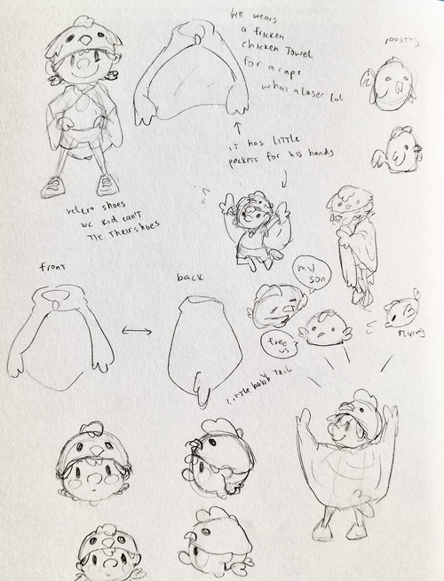
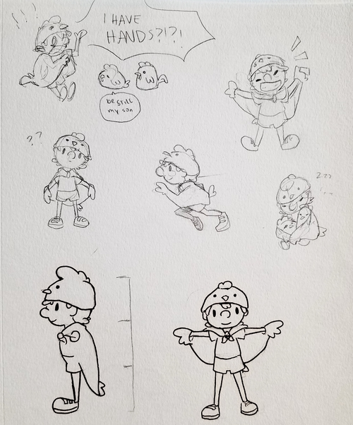

Modeling
Since Maya was a new thing to me, it took a while to get used to the controls and all of the different tools. However, I started getting the hang of it the more simple shapes and objects I made. Once I felt confident, I moved on to making Chicken Boy, the main character of the game. I wanted him to actually believe that he was a chicken trying to free his family, so I tried to reflect that in his design.

